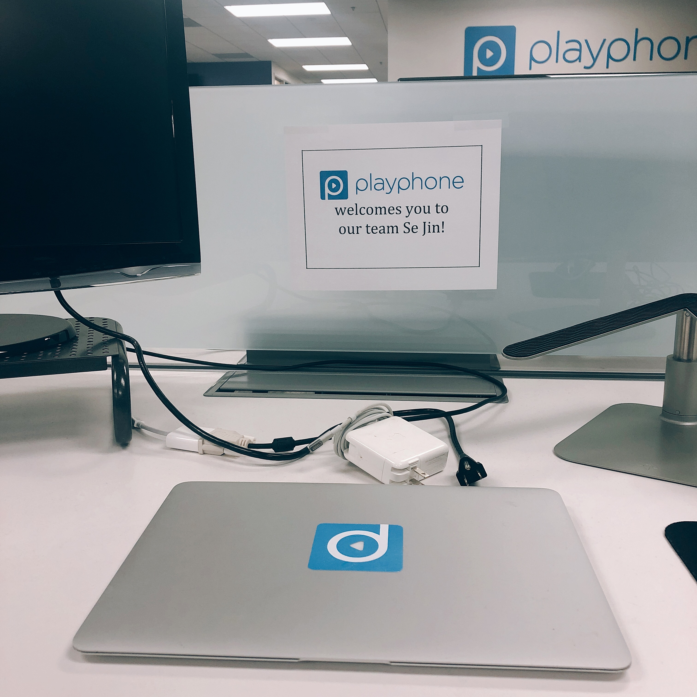
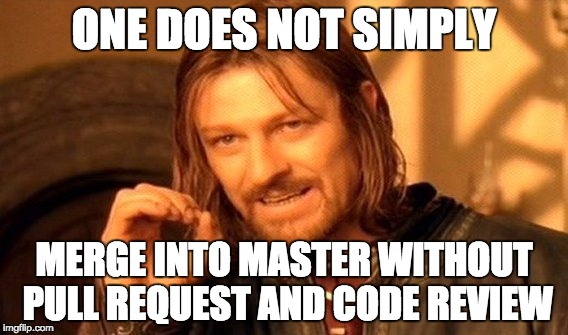

민망할정도로 오랜만에 포스팅을 하네요. 2달만에! 제 친구가 항상 저한테 "그래서 블로그 언제 또 업로드해 ㅋㅋㅋ" 라고 놀릴정도로... 회사 갔다오면 게임을 하거나 피곤해서 자거나해서 시간이 없었네요. 회사에 온지 한 달이 넘었는데 사실 안믿겨요.
나 진짜 일하고 있네?
솔직히 말해서 저는 프로그래밍에 자신이 있는 편이 아니였어요. 근데 미국가고싶다는 마음이 커서 여기저기 다 지원했고 결국 오게 되었어요. 막상 미국을 떠나기 1주일전부터는 너무 떨렸어요.
'가서 너무 못따라가고 못해서 중간에 짤리면 어떻게 하지? '
'하도 말하고 다녀서 주위에 다 아는데 만약 짤리면 잠수타야하나? '
장난안하고 속으로 스트레스를 많이 받았어요. 과연 내가 회사에서 할 수 있는 일이 있을까? 저 자신한테도 자신이 없었어요 하지만 시간은 제가 걱정하나 안하나 상관없이 빨리 지나갔고 결국 미국에 가게 됬어요
첫 출근 날
아무리 실리콘벨리 회사라고 해도 첫 인상이 중요하니깐 출근 첫날에 좋은 인상을 남기고 싶었어요. 미리 메일로 물어봤을때 그냥 편한 옷을 입고 오면 된다고 했지만 세미 정장으로 입고갔어요 ㅋㅋㅋㅋ 결과적으로 저빼고 다 엄청 편한옷을 입고 있더라구요. 처음으로 오피스를 들어갔을때 너무 기분이 좋았어요. 제가 딱 상상했던 오피스 모습이 였어요. 들어가자마자 저의 슈퍼바이저와 인사를 했어요. 스카입 인터뷰를 봤던 분인데 실제로 보니깐 진짜 왔다는게 실감이 났어요.
그리고 제 데스크를 알려주는데 가자마자
'Playphone welcomes you to our team Se Jin! '라고 써있었어요. 정말 그냥 아무것도 아닌 말인데 team 에 한 멤버가 된 느낌이 들어서 감-동을 받았답니다...ㅋㅋㅋㅋㅋ
가자마자 첫 미팅
이제 막 컴퓨터 세팅을 끝내고 자리에 앉았는데 곧 미팅이 있을꺼라고 하더라구요. 큰 미팅룸에 들어가니 이미 여러 명이 앉아계셨어요. 특이하게 미팅이 시작되자마자 스카입 연결소리가 났어요. 한 4-5명은 스카입으로 미팅을 참여하셨어요. 집에서 일하거나 심지어 뉴욕, 일본에서 참여하시는분도 계셨어요. 그걸보고 와...역시 실리콘벨리... 라고 또 실리콘벨리뽕에 취했습니다 미팅에서는 각 돌아가면서 나는 오늘 이걸 할꺼야라고 짧게 말하는 시간이였어요. 이런 미팅을 매일 아침에 하기 때문에 서로 뭐를 하고 있는지 알 수 있어서 좋았어요. 또 아침에 뭐라도 말해야하기 때문에 전 날에 제대로 되지 않은게 있다면 집에서라도 끝내고 와야해여...ㅠ; 그래도 전혀 무거운 느낌의 미팅은 아니고 항상 농담도 많이 하고 즐거운 분위기여서 싫지 않아요.
첫 주에 세팅과 싸움
저는 제가 가자마자 코딩할줄 알았는데 그게 아니더라구요. 첫 날 깃허브 회사 프로젝트에 초대된뒤 README 파일을 읽으면서 세팅을 하라고 하셨어요. 세팅이라길래 저는 당연히 하루만에 끝날줄 알았어요... 하지만 2년 넘게 개발한 프로젝트라서 그런지 깔게 참 많더라구요. Tomcat이 뭐고 Cassandra 가 뭐고 하나도 몰랐는데 깔다가 뭐 하나 버전을 다른거 깔면 안되고 자바 버전이 달라서 뭐가 안되고 해서 진짜 몇일간 엄청 고생 많이했어요... 코딩은 시작도 안했는데 헤매서 와 나 진짜 곧 한국 귀국각인데? 라고 생각했습니다...
근데 이때 느낀게 Terminal 을 잘 쓸줄 아는게 진짜 도움이 되는것같아요. 학교에서 멀쩡한 visual studio 같은 IDE 놔두고 vim 사용하게 해서 맨날 욕했었는데... 진짜 그게 모두 피와 살이 되서 저를 구원해주었어요...
두 번재 주의 미션은 유닛 테스팅
장난아니고 세팅때문에 ㄱ고생을 집에서 새벽까지 한 다음에 웹 앱을 제 컴터에 돌아가게 할 수 있었어요.. 그제서야 제대로 된 일을 받을 수 있었어요. 바로 Unit testing을 하고 만약 fail 되는게 있으면 원인을 찾고 고치는 것. 유닛 테스트는 Mock Object 를 만들어서 제대로 잘 돌아가는지 기능들을 확인하고 검증하는거에요. 지금 생각해보면 완전 쉬운거였는데 처음 접하는 프로젝트니깐 코드를 읽어도 제대로 이해가 안되서 에러가 어디서 났는지 찾기가 힘들었어요. 진짜 디버깅을 할때 어디에서 에러가 나는지 헷갈려서 breakpoint 만 몇십개 찍은것같아요.. 그래도 세팅에서 고생할때는 진짜 시간 낭비하는 기분이였는데 버그를 잡고 고치고 pull request 를 보내서 merged 됬을때 기분이 정말 좋았어요. 이 회사에 내가 조금이라도 도움이 되는구나! 생각이 들었어요
세 번째 주 드디어 제대로 된 코딩
유닛 테스팅을 할때는 제 코드를 쓰는게 아니라 남이 쓴 코드를 디버깅해서 고치는게 다 였어요 그래서 세 번째 주가 되어서야 드디어 순수 제 코드를 쓸 수 있었어요. 주어진 일은 카산드라 데이터베이스에 저장된 정보를 정해진 시간에 대해 filter 를 한 뒤 Solr 데이터베이스에 Populate 하는 일이 였어요. 사실 백앤드 경험이 많은 사람들은 쉽게 할 수 있는 쉬운 일이 였어요. 저요? 저는 당연히 아니였죠 또 stackOverflow 몇시간보고 집에서 유투브로 Spring, RESTful api 등 온갖 공부를 해서야 할 수 있었어요. 그렇게 해내니깐 진짜 뿌듯하고 다른 열 몇명의 개발자들이 제가 쓴 코드, 스크립트를 사용하게 되니깐 엄청 뿌듯했어요.
학교에서는 코딩을 하면서 항상
이거 배워서 뭐해? 이거 만들어서 어디다가 써?라는 생각을 많이 했는데 회사를 오니깐 일을 시작하기 전부터 뚜렷하게 알 수 있어서 좋아요. 오늘 아침에 나는 이걸 할꺼고 이건 회사가 이걸 하는데 도움이된다. 라는걸 아니깐 몇시간 고생을 해도 할 마음이 생기고 더 잘하고 싶은 마음이 생기는것 같아요.
일이 너무 재밌어요
인턴하다가 짤리면 잠수타야하나 고민했던 저는 어디가고 매일 행복하게 출근을 하고 있네요. 사람은 적응의 동물이라더니 진짜 막상 하면 다 되는것 같아요. 아직 갈 길이 멀지만 한 달이 지나니깐 적응을 다 해서 회사 다니는게 너무 재밌어졌어요. 이건 제가 일 하는게 잘맞는 스타일인건지 인턴이여서 그런건지 회사가 좋은건지 잘모르겠지만.. 앞으로 남은 11개월도 딱 지금 같았으면 좋겠어요.